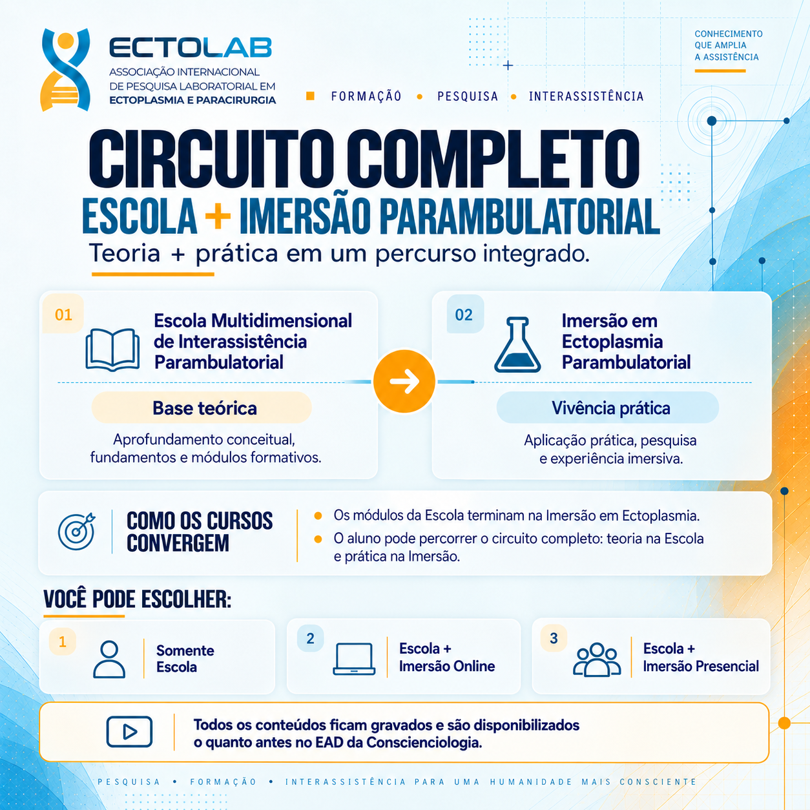
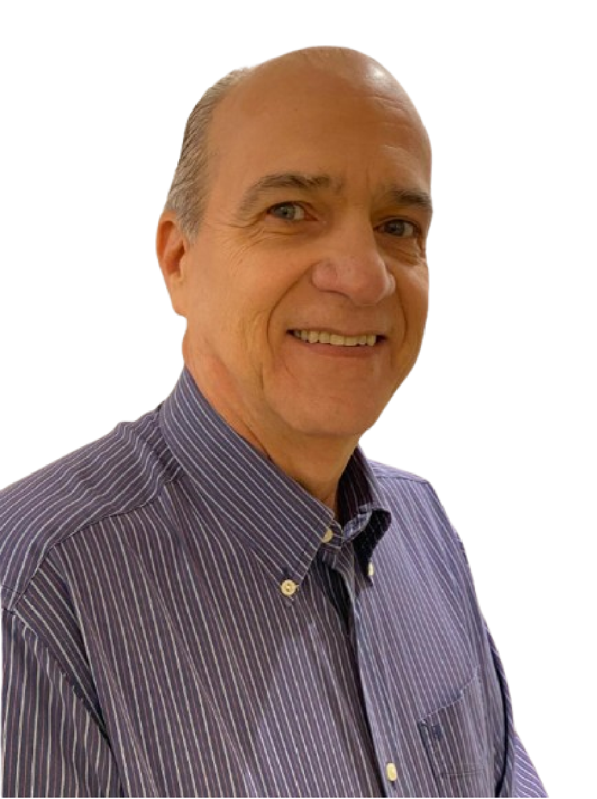

Escola Multidimensional deInterassistência Parambulatorial
Pesquisa, experiência e interassistência com lucidez e autocrítica. A base teórica que se completa, um mês depois, na prática da Imersão em Ectoplasmia 2027.

Um ambiente de autoexperimentação, estudo e pesquisa da interassistência em âmbito parambulatorial.
A Escola é para quem quer ir além de assistir aulas: é um espaço para experimentar, registrar e discutir a própria vivência parapsíquica em ambiente assistencial, com método e autocrítica.
São 4 encontros online mensais, de novembro de 2026 a fevereiro de 2027, com o professor Hernande Leite e docentes convidados. O percurso termina um mês antes da Imersão em Ectoplasmia — a etapa prática, em campo.
Você não precisa ter feito nenhum curso antes. A Escola foi pensada para o público geral que quer entender e praticar a interassistência com base científica.
Interação multidimensional
Aprender pela experiência: cada encontro inclui prática energética e observação parapsíquica em grupo.
Estudos de casos
Casos reais de parambulatório analisados em turma — o que aconteceu, como foi percebido, o que se conclui.
Metodologia específica
Técnicas de evidenciação parapsíquica e método parapercepciológico para registrar e validar o que se percebe.
Três frentes de qualificação.
Pessoal, pesquisística e assistencial — para chegar à teática da interassistência parambulatorial: saber e fazer, juntos.
Desenvolvimento do parapsiquismo lúcido
Perceber com clareza, sem misticismo. Emprego autocrítico dos fundamentos da Parapercepciologia.
Estruturação parapesquisística em Assistenciologia
Transformar experiência em pesquisa: registro, comparação e conclusões que possam ser verificadas.
Qualificação tarística do conscienciólogo
Assistir melhor — com responsabilidade, método e domínio das técnicas de evidenciação parapsíquica.
Um encontro por mês.
Quatro encontros online.
Sempre em domingos, com transmissão ao vivo. Datas definidas para você se organizar com antecedência.
Distribuição dos temas por encontro e docentes convidados serão confirmados aos inscritos.
Teoria na Escola.
Prática na Imersão.
São dois cursos que se completam. Na Escola você estuda a fundo; na Imersão em Ectoplasmia, um mês depois, você vive em campo o que estudou. Quem faz os dois faz, na prática, um curso só.
Escola Multidimensional de Interassistência Parambulatorial
NOV/2026 → FEV/2027 · 4 ENCONTROSA parte teórica estudada com profundidade: fundamentos, método, estudos de casos e autoexperimentação orientada.
- 4 aulas online ao vivo, uma por mês
- Estudos de casos de parambulatório
- Metodologia parapercepciológica
- Preparação direta para o campo
depois
Imersão em Ectoplasmia Parambulatorial
19, 20 E 21 DE MARÇO DE 2027A parte prática. Aulas teóricas também, mas com foco no que só se aprende em campo.
- 2 campos ectoplásmicos interassistenciais
- Participação na pesquisa da Ectolab
- Devolutiva do parapercepcionograma
- 10 a 11 minicursos na semana que antecede a Imersão
Escolha como quer participar.
Inscrição por lote: quanto antes, menor o valor. E os combos garantem Escola + Imersão com desconto sobre a compra separada.
Escola + Imersão online
- Escola completa · 4 encontros online
- Imersão em Ectoplasmia · transmissão online (R$ 800)
- Minicursos, aulas e devolutiva do parapercepcionograma
- Presença nos campos em Foz do Iguaçu
Escola + Imersão presencial
- Escola completa · 4 encontros online
- Imersão em Ectoplasmia · presencial em Foz do Iguaçu (R$ 1.500)
- 2 campos ectoplásmicos interassistenciais ao vivo
- Participação na pesquisa e devolutiva do parapercepcionograma
Valores da Imersão avulsa: R$ 1.500 presencial · R$ 800 online. Economia calculada em relação à Escola no 2º lote (R$ 600) somada à Imersão avulsa. Dúvidas sobre condições para 60+, voluntários e casais: fale com a secretaria. Ver página de combos →

Hernande Leite
Professor responsável pela Escola e pela aula de Parambulatório nos cursos da Ectolab. Conduz os quatro encontros com a participação de docentes convidados nos temas de paracirurgia, ectoplasmologia, fitoectoplasmia, sistema energético e parapercepciograma.